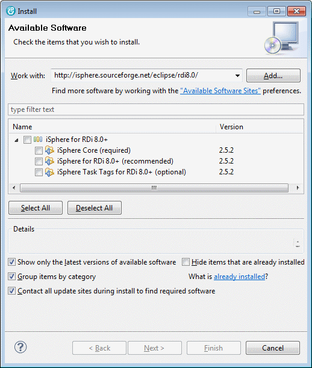

Install Plug-in for RDi 8.0+
Using the iSphere Update Site
From the main menu, select "Help > Install New Software..." to enter the "Install" dialog.
Drag-and-drop the URL of the iSphere update site http://isphere.sourceforge.net/eclipse/rdi8.0/ into the "Work with:" field:

Then select the options you want to install, press the [Next] button and follow the instructions given on the following pages.
Using a Local Update Directory
Go to the iSphere download page at SourceForge and download the zip file for your environment.
The follow these steps to create your local update site:
- Unpack the zip file to a directory of your choice. This directory will be your local update site.
- From the main menu, select "Help > Install New Software..." to enter the "Install" dialog.
- Press the [Add] button to add your directory to the list of available update sites.
- Use the [Local...] button to select your directory.
Using a Local Update Archive
Go to the iSphere download page at SourceForge and download the zip file for your environment.
The follow these steps to create your local update site:
- Download the zip file to a directory of your choice. This zip file will be your local update archive.
- Consider removing the version number from the name of the zip file to keep the name stable for further updates.
- From the main menu, select "Help > Install New Software..." to enter the "Install" dialog.
- Press the [Add] button to add the zip file to the list of available update sites.
- Use the [Archive...] button to select the zip file.